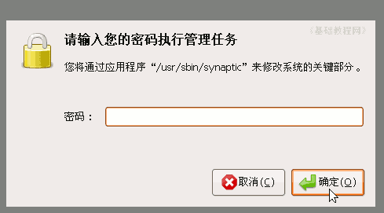
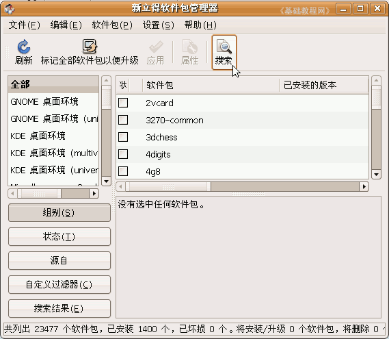
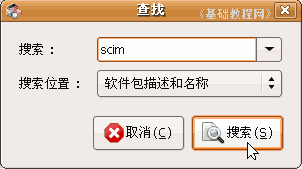
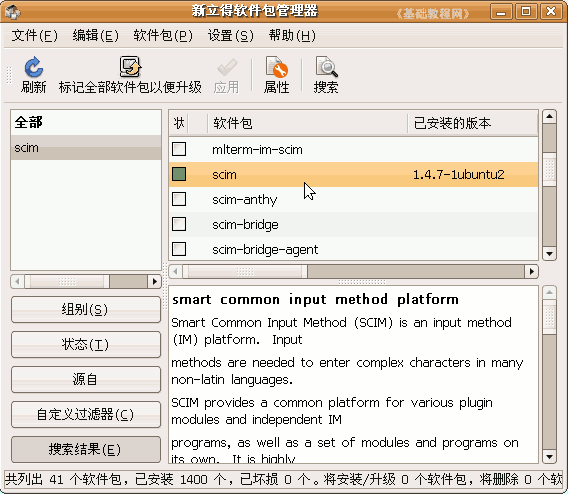
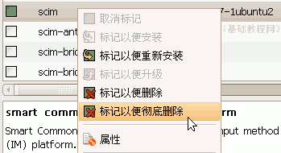
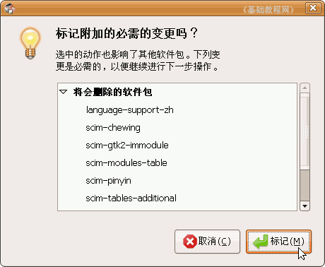
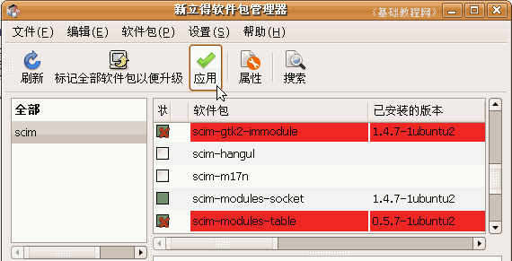
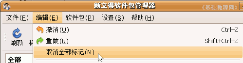
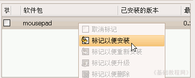

SCIM输入法操作基础
一、卸载和重装 返回目录
这一课我们来学习一下SCIM的安装和卸载，对系统有一个更好的认识，下面我们来 看一个练习；
1、卸载SCIM
1）在上面板栏找到菜单“系统－系统管理－新立得软件包管理器”，屏幕变暗，提示输入密码，输入自己的密码；

2）点“确定”后出来新立得的窗口，先进行扫描，稍微等一会，然后在上面工具栏里点“搜索”按钮；
3）在出来的对话框里输入“scim”，点“搜索”开始查找；

4）过一会儿就出来一个文件列表，在里面找到scim，点击选中，下面有软件的说明；

5）瞄准敲右键，出来一个菜单，选择“标记以便彻底删除”，出来一个提示面板，里面的相关内容都会被删除，点“标记”；
 
6）这时候所有相关的软件都被标记为红色，左边的图标上有个叉，在工具栏上的“应用”按钮变绿；

7）如果点击“应用”按钮就可以卸载了，这儿点菜单“编辑－取消所有标记”，取消刚才的所有操作；

8）安装一个软件的方法跟它类似，只是在点右键以后，选择“标记以便安装”，然后点“应用”按钮即可；

本节学习了在Ubuntu中卸载和安装SCIM中文输入法的 基本方法，如果你成功地完成了练习，请继续学习下一课内容；本教程由86团学校TeliuTe制作|著作权所有
基础教程网：http://teliute.org/
美丽的校园……
转载和引用本站内容，请保留作者和本站链接。